- After studying this chapter, you will be able to:
- Describe the actions and roles of agonists and antagonists
- Explain the structure and organization of muscle fascicles and their role in generating force
- Explain the criteria used to name skeletal muscles
- Identify the skeletal muscles and their actions on the skeleton and soft tissues of the body
- Identify the origins and insertions of skeletal muscles and the prime movements
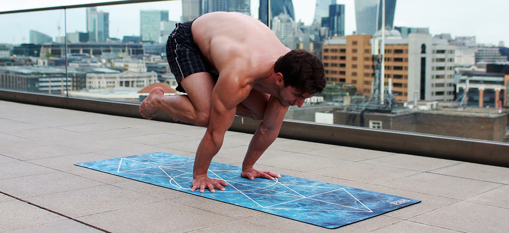
- Compare and contrast agonist and antagonist muscles
- Describe how fascicles are arranged within a skeletal muscle
- Explain the major events of a skeletal muscle contraction within a muscle in generating force
To move the skeleton, the tension created by the contraction of the fibers in most skeletal muscles is transferred to the tendons. The tendons are strong bands of dense, regular connective tissue that connect muscles to bones. The bone connection is why this muscle tissue is called skeletal muscle.
To pull on a bone, that is, to change the angle at its synovial joint, which essentially moves the skeleton, a skeletal muscle must also be attached to a fixed part of the skeleton. The moveable end of the muscle that attaches to the bone being pulled is called the muscle’sinsertion, and the end of the muscle attached to a fixed (stabilized) bone is called theorigin. During forearmflexion—bending the elbow—the brachioradialis assists the brachialis.
Although a number of muscles may be involved in an action, the principal muscle involved is called theprime mover, oragonist. To lift a cup, a muscle called the biceps brachii is actually the prime mover; however, because it can be assisted by the brachialis, the brachialis is called asynergistin this action (Figure \(\PageIndex{1}\) ). A synergist can also be afixatorthat stabilizes the bone that is the attachment for the prime mover’s origin.
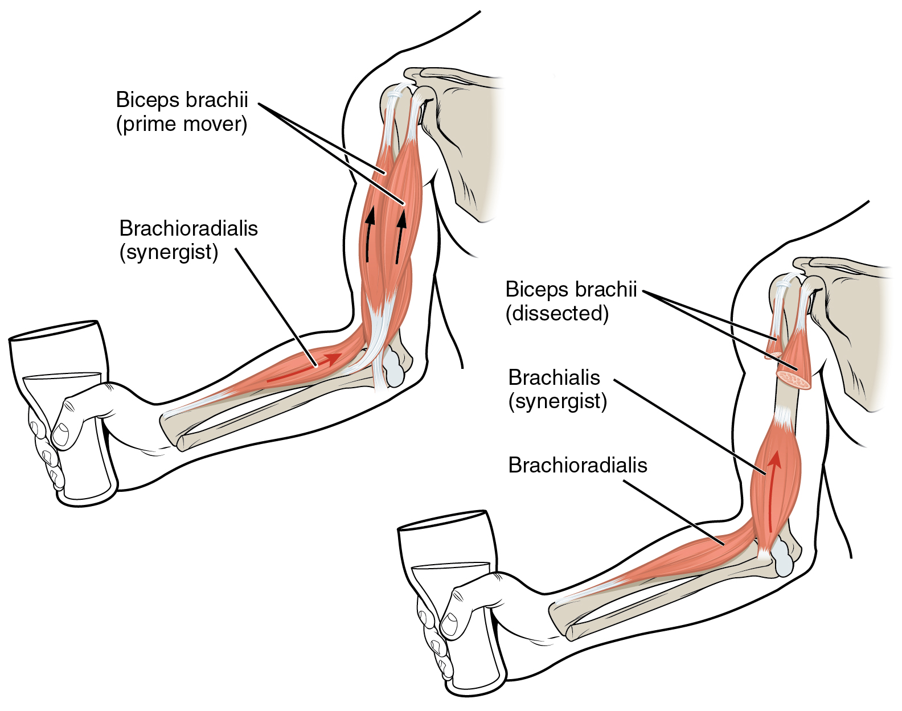
A muscle with the opposite action of the prime mover is called anantagonist. Antagonists play two important roles in muscle function: (1) they maintain body or limb position, such as holding the arm out or standing erect; and (2) they control rapid movement, as in shadow boxing without landing a punch or the ability to check the motion of a limb.
For example, to extend the knee, a group of four muscles called the quadriceps femoris in the anterior compartment of the thigh are activated (and would be called the agonists of knee extension). However, to flex the knee joint, an opposite or antagonistic set of muscles called the hamstrings is activated.
As you can see, these terms would also be reversed for the opposing action. If you consider the first action as the knee bending, the hamstrings would be called the agonists and the quadriceps femoris would then be called the antagonists. See Table \(\PageIndex{1}\) for a list of some agonists and antagonists.
| Agonist | Antagonist | Movement |
|---|---|---|
| Biceps brachii: in the anterior compartment of the arm | Triceps brachii: in the posterior compartment of the arm | The biceps brachii flexes the forearm, whereas the triceps brachii extends it. |
| Hamstrings: group of three muscles in the posterior compartment of the thigh | Quadriceps femoris: group of four muscles in the anterior compartment of the thigh | The hamstrings flex the leg, whereas the quadriceps femoris extend it. |
| Flexor digitorum superficialis and flexor digitorum profundus: in the anterior compartment of the forearm | Extensor digitorum: in the posterior compartment of the forearm | The flexor digitorum superficialis and flexor digitorum profundus flex the fingers and the hand at the wrist, whereas the extensor digitorum extends the fingers and the hand at the wrist. |
There are also skeletal muscles that do not pull against the skeleton for movements. For example, there are the muscles that produce facial expressions. The insertions and origins of facial muscles are in the skin, so that certain individual muscles contract to form a smile or frown, form sounds or words, and raise the eyebrows. There also are skeletal muscles in the tongue, and the external urinary and anal sphincters that allow for voluntary regulation of urination and defecation, respectively. In addition, the diaphragm contracts and relaxes to change the volume of the pleural cavities but it does not move the skeleton to do this.
#### Exercise and Stretching
When exercising, it is important to first warm up the muscles. Stretching pulls on the muscle fibers and it also results in an increased blood flow to the muscles being worked. Without a proper warm-up, it is possible that you may either damage some of the muscle fibers or pull a tendon. A pulled tendon, regardless of location, results in pain, swelling, and diminished function; if it is moderate to severe, the injury could immobilize you for an extended period.
Recall the discussion about muscles crossing joints to create movement. Most of the joints you use during exercise are synovial joints, which have synovial fluid in the joint space between two bones. Exercise and stretching may also have a beneficial effect on synovial joints. Synovial fluid is a thin, but viscous film with the consistency of egg whites. When you first get up and start moving, your joints feel stiff for a number of reasons. After proper stretching and warm-up, the synovial fluid may become less viscous, allowing for better joint function.
Skeletal muscle is enclosed in connective tissue scaffolding at three levels. Each muscle fiber (cell) is covered by endomysium and the entire muscle is covered by epimysium. When a group of muscle fibers is “bundled” as a unit within the whole muscle by an additional covering of a connective tissue called perimysium, that bundled group of muscle fibers is called afascicle. Fascicle arrangement by perimysia is correlated to the force generated by a muscle; it also affects the range of motion of the muscle. Based on the patterns of fascicle arrangement, skeletal muscles can be classified in several ways. What follows are the most common fascicle arrangements.
Parallelmuscles have fascicles that are arranged in the same direction as the long axis of the muscle (Figure \(\PageIndex{2}\)). The majority of skeletal muscles in the body have this type of organization. Some parallel muscles are flat sheets that expand at the ends to make broad attachments. Other parallel muscles are rotund with tendons at one or both ends. Muscles that seem to be plump have a large mass of tissue located in the middle of the muscle, between the insertion and the origin, which is known as the central body. A more common name for this muscle isbelly. When a muscle contracts, the contractile fibers shorten it to an even larger bulge. For example, extend and then flex your biceps brachii muscle; the large, middle section is the belly (Figure \(\PageIndex{3}\)). When a parallel muscle has a central, large belly that is spindle-shaped, meaning it tapers as it extends to its origin and insertion, it sometimes is calledfusiform.
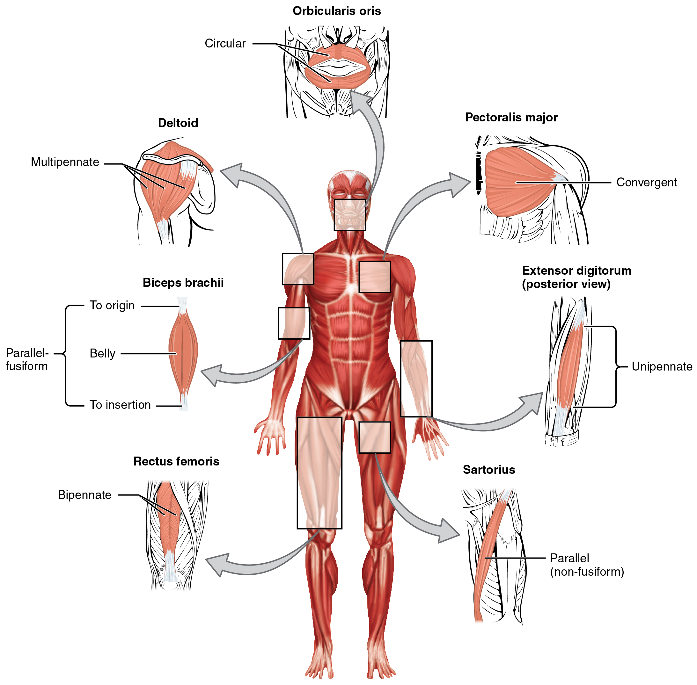
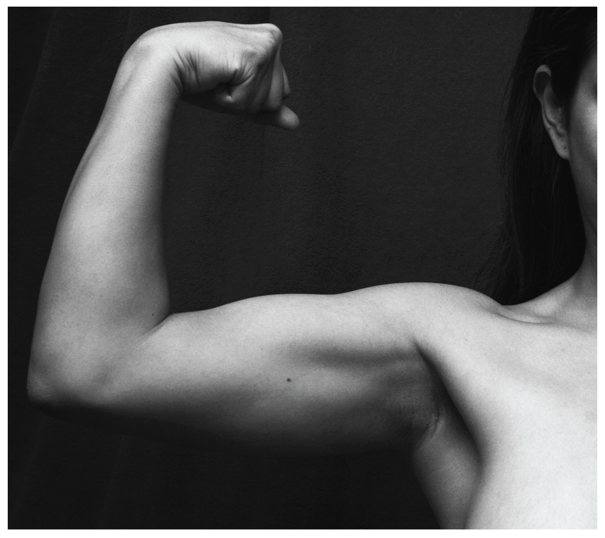
Circularmuscles are also called sphincters (see Figure \(\PageIndex{2}\)). When they relax, the sphincters’ concentrically arranged bundles of muscle fibers increase the size of the opening, and when they contract, the size of the opening shrinks to the point of closure. The orbicularis oris muscle is a circular muscle that goes around the mouth. When it contracts, the oral opening becomes smaller, as when puckering the lips for whistling. Another example is the orbicularis oculi, one of which surrounds each eye. Consider, for example, the names of the two orbicularis muscles (orbicularis oris and oribicularis oculi), where part of the first name of both muscles is the same. The first part of orbicularis, orb (orb = “circular”), is a reference to a round or circular structure; it may also make one think of orbit, such as the moon’s path around the earth. The word oris (oris = “oral”) refers to the oral cavity, or the mouth. The word oculi (ocular = “eye”) refers to the eye.
There are other muscles throughout the body named by their shape or location. The deltoid is a large, triangular-shaped muscle that covers the shoulder. It is so-named because the Greek letter delta looks like a triangle. The rectus abdominis (rector = “straight”) is the straight muscle in the anterior wall of the abdomen, while the rectus femoris is the straight muscle in the anterior compartment of the thigh.
When a muscle has a widespread expansion over a sizable area, but then the fascicles come to a single, common attachment point, the muscle is calledconvergent. The attachment point for a convergent muscle could be a tendon, an aponeurosis (a flat, broad tendon), or a raphe (a very slender tendon). The large muscle on the chest, the pectoralis major, is an example of a convergent muscle because it converges on the greater tubercle of the humerus via a tendon. The temporalis muscle of the cranium is another.
Pennatemuscles (penna = “feathers”) blend into a tendon that runs through the central region of the muscle for its whole length, somewhat like the quill of a feather with the muscle arranged similar to the feathers. Due to this design, the muscle fibers in a pennate muscle can only pull at an angle, and as a result, contracting pennate muscles do not move their tendons very far. However, because a pennate muscle generally can hold more muscle fibers within it, it can produce relatively more tension for its size. There are three subtypes of pennate muscles.
In aunipennatemuscle, the fascicles are located on one side of the tendon. The extensor digitorum of the forearm is an example of a unipennate muscle. Abipennatemuscle has fascicles on both sides of the tendon. In some pennate muscles, the muscle fibers wrap around the tendon, sometimes forming individual fascicles in the process. This arrangement is referred to asmultipennate. A common example is the deltoid muscle of the shoulder, which covers the shoulder but has a single tendon that inserts on the deltoid tuberosity of the humerus.
Because of fascicles, a portion of a multipennate muscle like the deltoid can be stimulated by the nervous system to change the direction of the pull. For example, when the deltoid muscle contracts, the arm abducts (moves away from midline in the sagittal plane), but when only the anterior fascicle is stimulated, the arm willabductand flex (move anteriorly at the shoulder joint).
Skeletal muscles do not work by themselves. Muscles are arranged in pairs based on their functions. For muscles attached to the bones of the skeleton, the connection determines the force, speed, and range of movement. These characteristics depend on each other and can explain the general organization of the muscular and skeletal systems.
The skeleton and muscles act together to move the body. Have you ever used the back of a hammer to remove a nail from wood? The handle acts as a lever and the head of the hammer acts as a fulcrum, the fixed point that the force is applied to when you pull back or push down on the handle. The effort applied to this system is the pulling or pushing on the handle to remove the nail, which is the load, or “resistance” to the movement of the handle in the system. Our musculoskeletal system works in a similar manner, with bones being stiff levers and the articular endings of the bones—encased in synovial joints—acting as fulcrums. The load would be an object being lifted or any resistance to a movement (your head is a load when you are lifting it), and the effort, or applied force, comes from contracting skeletal muscle.
📖 OpenStax Anatomy & Physiology 2e, Section 11.2. openstax.org · CC BY 4.0
- Describe the criteria used to name skeletal muscles
- Explain how understanding the muscle names helps describe shapes, location, and actions of various muscles
The Greeks and Romans conducted the first studies done on the human body in Western culture. The educated class of subsequent societies studied Latin and Greek, and therefore the early pioneers of anatomy continued to apply Latin and Greek terminology or roots when they named the skeletal muscles. The large number of muscles in the body and unfamiliar words can make learning the names of the muscles in the body seem daunting, but understanding the etymology can help. Etymology is the study of how the root of a particular word entered a language and how the use of the word evolved over time. Taking the time to learn the root of the words is crucial to understanding the vocabulary of anatomy and physiology. When you understand the names of muscles it will help you remember where the muscles are located and what they do (Figure \(\PageIndex{1}\), Figure \(\PageIndex{2}\), and Table \(\PageIndex{1}\) ). Pronunciation of words and terms will take a bit of time to master, but after you have some basic information; the correct names and pronunciations will become easier.
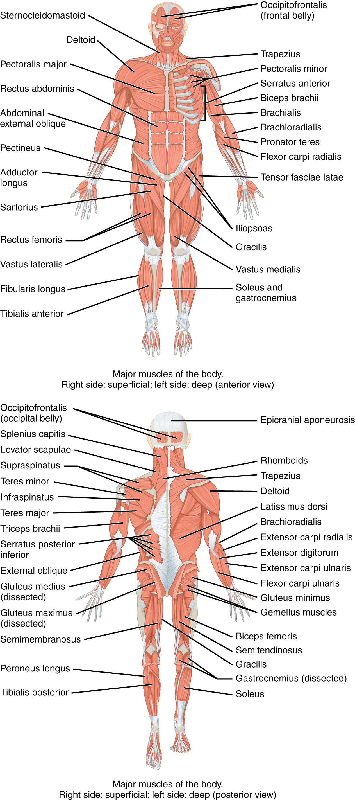
![This table shows two examples of muscle names and how to translate them based on their Latin roots. The first row uses abductor digiti minimi as an example. The word abductor comes from the Latin roots ab, which means away from, and duct, which means to move. Therefore an abductor is a muscle that moves away from something. The word digiti comes from the Latin root digititus, which means digit and refers to a finger or toe. The word minimi comes from the Latin root minimus, which means minimum, tiny, or little. Therefore, the abductor digiti minimi is a muscle that moves the little finger or toe away. The second row uses the adductor digiti minimi as an example. The word adductor comes from the Latin root ad, which means to or toward, and duct, which means to move. Therefore an adductor is a muscle that moves toward something. As with the abductor digiti minimi, digiti refers to a finger or toe and minimi refers to something that is little. Therefore the adductor digiti minimi is a muscle that moves the little finger or toe forward.](images/ch11/fig11-6-this-table-shows-two-examples-of-muscle-.jpg)
| Example | Latin or Greek Translation | Mnemonic Device |
|---|---|---|
| ad | to; toward | ADvance toward your goal |
| ab | away from | n/a |
| sub | under | SUBmarines move under water. |
| ductor | something that moves | A conDUCTOR makes a train move. |
| anti | against | If you are antisocial, you are against engaging in social activities. |
| epi | on top of | n/a |
| apo | to the side of | n/a |
| longissimus | longest | “Longissimus” is longer than the word “long.” |
| longus | long | long |
| brevis | short | brief |
| maximus | large | max |
| medius | medium | “Medius” and “medium” both begin with “med.” |
| minimus | tiny; little | mini |
| rectus | straight | To RECTify a situation is to straighten it out. |
| multi | many | If something is MULTIcolored, it has many colors. |
| uni | one | A UNIcorn has one horn. |
| bi/di | two | If a ring is DIcast, it is made of two metals. |
| tri | three | TRIple the amount of money is three times as much. |
| quad | four | QUADruplets are four children born at one birth. |
| externus | outside | EXternal |
| internus | inside | INternal |
Anatomists name the skeletal muscles according to a number of criteria, each of which describes the muscle in some way. These include naming the muscle after its shape, its size compared to other muscles in the area, its location in the body or the location of its attachments to the skeleton, how many origins it has, or its action.
The skeletal muscle’s anatomical location or its relationship to a particular bone often determines its name. For example, the frontalis muscle is located on top of the frontal bone of the skull. Similarly, the shapes of some muscles are very distinctive and the names, such as orbicularis, reflect the shape. For the buttocks, the size of the muscles influences the names: gluteusmaximus(largest), gluteusmedius(medium), and the gluteusminimus(smallest). Names were given to indicate length—brevis(short),longus(long)—and to identify position relative to the midline:lateralis(to the outside away from the midline), andmedialis(toward the midline). The direction of the muscle fibers and fascicles are used to describe muscles relative to the midline, such as therectus(straight) abdominis, or theoblique(at an angle) muscles of the abdomen.
Some muscle names indicate the number of muscles in a group. One example of this is the quadriceps, a group of four muscles located on the anterior (front) thigh. Other muscle names can provide information as to how many origins a particular muscle has, such as the biceps brachii. The prefixbiindicates that the muscle has two origins andtriindicates three origins.
The location of a muscle’s attachment can also appear in its name. When the name of a muscle is based on the attachments, the origin is always named first. For instance, the sternocleidomastoid muscle of the neck has a dual origin on the sternum (sterno) and clavicle (cleido), and it inserts on the mastoid process of the temporal bone. The last feature by which to name a muscle is its action. When muscles are named for the movement they produce, one can find action words in their name. Some examples areflexor(decreases the angle at the joint),extensor(increases the angle at the joint),abductor(moves the bone away from the midline), oradductor(moves the bone toward the midline).
📖 OpenStax Anatomy & Physiology 2e, Section 11.3. openstax.org · CC BY 4.0
- Identify the axial muscles of the face, head, and neck
- Identify the movement and function of the face, head, and neck muscles
The skeletal muscles are divided intoaxial(muscles of the trunk and head) andappendicular(muscles of the arms and legs) categories. This system reflects the bones of the skeleton system, which are also arranged in this manner. The axial muscles are grouped based on location, function, or both. Some of the axial muscles may seem to blur the boundaries because they cross over to the appendicular skeleton. The first grouping of the axial muscles you will review includes the muscles of the head and neck, then you will review the muscles of the vertebral column, and finally you will review the oblique and rectus muscles.
The origins of the muscles of facial expression are on the surface of the skull (remember, the origin of a muscle does not move). The insertions of these muscles have fibers intertwined with connective tissue and the dermis of the skin. Because the muscles insert in the skin rather than on bone, when they contract, the skin moves to create facial expression (Figure \(\PageIndex{1}\) ).
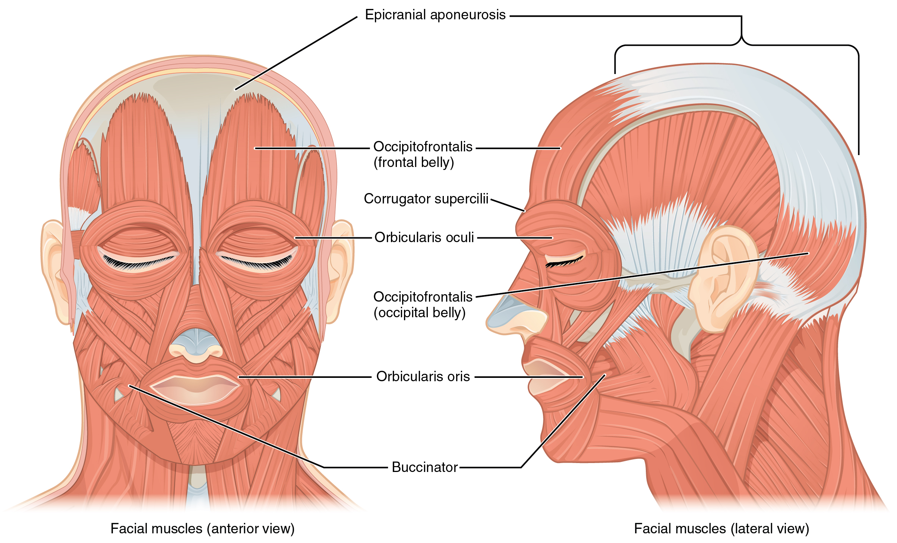
Theorbicularis orisis a circular muscle that moves the lips, and theorbicularis oculiis a circular muscle that closes the eye. Theoccipitofrontalismuscle moves up the scalp and eyebrows. The muscle has a frontal belly and an occipital (near the occipital bone on the posterior part of the skull) belly. In other words, there is a muscle on the forehead (frontalis) and one on the back of the head (occipitalis), but there is no muscle across the top of the head. Instead, the two bellies are connected by a broad tendon called theepicranial aponeurosis, or galea aponeurosis (galea = “helmet”). The physicians originally studying human anatomy thought the skull looked like a helmet.
A large portion of the face is composed of thebuccinatormuscle, which compresses the cheek. This muscle allows you to whistle, blow, and suck; and it contributes to the action of chewing. There are several small facial muscles, one of which is thecorrugator supercilii, which is the prime mover of the eyebrows. Place your finger on your eyebrows at the point of the bridge of the nose. Raise your eyebrows as if you were surprised and lower your eyebrows as if you were frowning. With these movements, you can feel the action of the corrugator supercilii. Additional muscles of facial expression are presented in Figure \(\PageIndex{2}\).
![This table describes the muscles used in facial expressions. To raise the eyebrows, as when showing surprise, the skin of the scalp moves in an anterior direction. The prime mover is the occipitofrontalis frontal belly, which originates from the epicraneal aponeurosis and inserts underneath the skin of the forehead. To tense and retract the scalp, the skin of the scalp moves in the posterior direction. The prime mover is the occipitofrontalis occipital belly, which originates from the occipital bone and the mastoid process of the temporal bone and inserts into the epicraneal aponeurosis. To lower the eyebrows, as when scowling or frowning, the skin underneath the eyebrows moves in an inferior direction. The prime mover is the corrugator supercilii, which originates from the frontal bone and inserts into the skin underneath the eyebrow. To flare the nostrils, the nasal cartilage is compressed in an inferior and posterior direction. The prime mover is the nasalis, which originates from the maxilla and inserts into the nasal bone. Raising the upper lip involves elevating the upper lip tissue. The prime mover is the levator labii superioris, which originates from the maxilla and inserts underneath the skin at the corners of the mouth and also into the orbicularis oris. Lowering the lower lip involves depressing the lip and also moving it laterally. The prime mover is the depressor angulus oris, which originates from the mandible and inserts underneath the skin of the lower lip. Opening the mouth and sliding the lower jaw left and right involves depressing the lower jaw and also moving it laterally. The prime mover is thecdepressor angulus oris, which originates from the mandible and inserts underneath the skin at the corners of the mouth. Smiling involves elevating the corners of the mouth and also moving them in a lateral direction. The prime mover is the zygomaticus major, which originates from the zygomatic bone and inserts underneath the skin at the corners of the mouth in the dimple area, and also into the orbicularis oris. Shaping of the lips as during speech involves moving the lips in multiple directions. The prime mover is the orbicularis oris which originates from the tissue surrounding the lips and inserts underneath the skin at the corners of the mouth. Lateral movement of the cheeks such as when sucking on a straw or to compress air in the mouth while blowing involves moving the cheeks in a lateral direction. The prime mover is the buccinator, which originates from the maxilla, the mandible, and the sphenoid bone via the pterygomandibular raphae, and inserts into the orbicularis oris. Pursing of the lips by straightening them laterally involves moving the corners of the mouth in a lateral direction. The prime mover is the risorius, which originates from the fascia of the parotid salivary gland and inserts underneath the skin at the corners of the mouth. Protrusion of the lower lip, as when making a pouting expression, involves protracting the lower lip and the skin of the chin. The prime mover is the mentalis, which originates from the mandible and inserts underneath the skin of the chin.](images/ch11/fig11-8-this-table-describes-the-muscles-used-in.jpg)
The movement of the eyeball is under the control of theextrinsic eye muscles, which originate outside the eye and insert onto the outer surface of the white of the eye. These muscles are located inside the eye socket and cannot be seen on any part of the visible eyeball (Figure \(\PageIndex{3}\) and Table \(\PageIndex{1}\) ). If you have ever been to a doctor who held up a finger and asked you to follow it up, down, and to both sides, the doctor is checking to make sure your eye muscles are acting in a coordinated pattern.
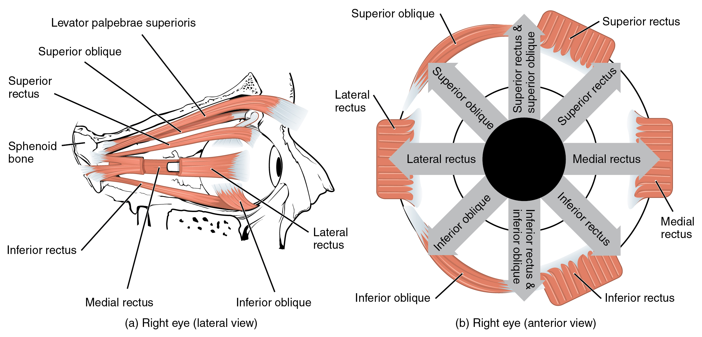
| Movement | Target | Target motion direction | Prime mover | Origin | Insertion |
|---|---|---|---|---|---|
| Moves eyes up and toward nose; rotates eyes from 1 o’clock to 3 o’clock | Eyeballs | Superior (elevates); medial (adducts) | Superior rectus | Common tendinous ring (ring attaches to optic foramen) | Superior surface of eyeball |
| Moves eyes down and toward nose; rotates eyes from 6 o’clock to 3 o’clock | Eyeballs | Inferior (depresses); medial (adducts) | Inferior rectus | Common tendinous ring (ring attaches to optic foramen) | Inferior surface of eyeball |
| Moves eyes away from nose | Eyeballs | Lateral (abducts) | Lateral rectus | Common tendinous ring (ring attaches to optic foramen) | Lateral surface of eyeball |
| Moves eyes toward nose | Eyeballs | Medial (adducts) | Medial rectus | Common tendinous ring (ring attaches to optic foramen) | Medial surface of eyeball |
| Moves eyes up and away from nose; rotates eyeball from 12 o’clock to 9 o’clock | Eyeballs | Superior (elevates); lateral (abducts) | Inferior oblique | Floor of orbit (maxilla) | Surface of eyeball between inferior rectus and lateral rectus |
| Moves eyes down and away from nose; rotates eyeball from 6 o’clock to 9 o’clock | Eyeballs | Inferior (depress); lateral (abducts) | Superior oblique | Sphenoid bone | Surface of eyeball between superior rectus and lateral rectus |
| Opens eyes | Upper eyelid | Superior (elevates) | Levator palpabrae superioris | Roof of orbit (sphenoid bone) | Skin of upper eyelids |
| Closes eyelids | Eyelid skin | Compression along superior–inferior axis | Orbicularis oculi | Medial bones composing the orbit | Circumference of orbit |
In anatomical terminology, chewing is calledmastication. Muscles involved in chewing must be able to exert enough pressure to bite through and then chew food before it is swallowed (Figure \(\PageIndex{4}\) and Table \(\PageIndex{2}\) ). Themassetermuscle is the main muscle used for chewing because it elevates the mandible (lower jaw) to close the mouth, and it is assisted by thetemporalismuscle, which retracts the mandible. You can feel the temporalis move by putting your fingers to your temple as you chew.
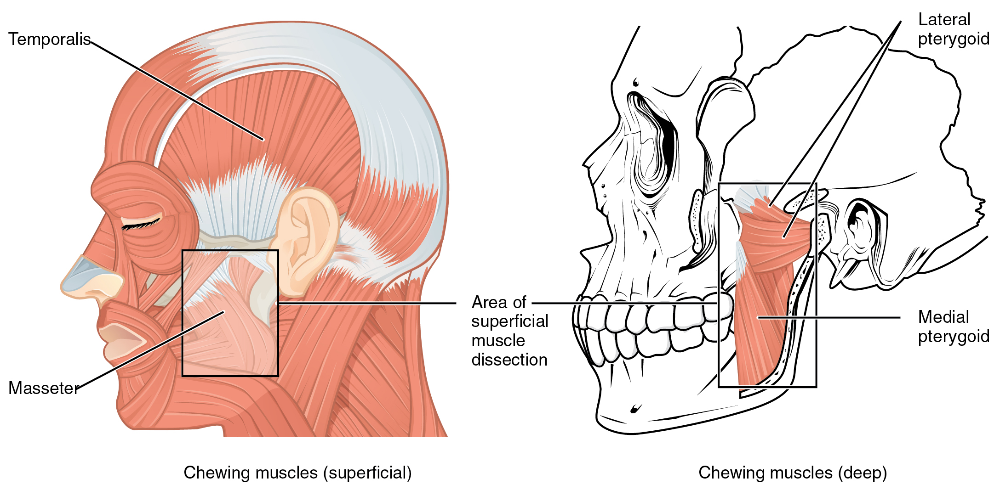
| Movement | Target | Target motion direction | Prime mover | Origin | Insertion |
|---|---|---|---|---|---|
| Closes mouth; aids chewing | Mandible | Superior (elevates) | Masseter | Maxilla arch; zygomatic arch (for masseter) | Mandible |
| Closes mouth; pulls lower jaw in under upper jaw | Mandible | Superior (elevates); posterior (retracts) | Temporalis | Temporal bone | Mandible |
| Opens mouth; pushes lower jaw out under upper jaw; moves lower jaw side-to-side | Mandible | Inferior (depresses); posterior (protracts); lateral (abducts); medial (adducts) | Lateral pterygoid | Pterygoid process of sphenoid bone | Mandible |
| Closes mouth; pushes lower jaw out under upper jaw; moves lower jaw side-to-side | Mandible | Superior (elevates); posterior (protracts); lateral (abducts); medial (adducts) | Medial pterygoid | Sphenoid bone; maxilla | Mandible; temporo-mandibular joint |
Although the masseter and temporalis are responsible for elevating and closing the jaw to break food into digestible pieces, themedial pterygoidandlateral pterygoidmuscles provide assistance in chewing and moving food within the mouth.
Although the tongue is obviously important for tasting food, it is also necessary for mastication,deglutition(swallowing), and speech (Figure \(\PageIndex{5}\) and Figure \(\PageIndex{6}\) ). Because it is so moveable, the tongue facilitates complex speech patterns and sounds.
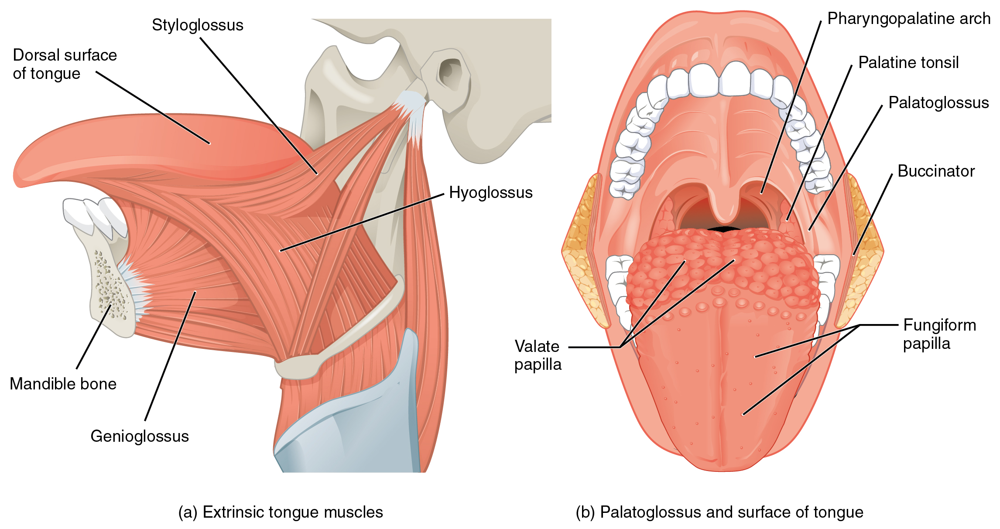
![This table describes the muscles used in tongue movement, swallowing, and speech. The genioglossus moves the tongue down and sticks the tongue out of the mouth. It originates in the mandible. The styloglossus moves the tongue up and retracts the tongue back into the mouth. It originates in the temporal bone. The hyoglossus flattens the tongue. It originates in the hyoid bone. The palatoglossus bulges the tongue. It originates in the soft palate. The digastric raises the hyoid bone in a way that also raises the larynx, allowing the epiglottis to cover the glottis during deglutition; it also assists in opening the mouth by depressing the mandible. It originates in the mandible and temporal bone. The stylohyoid raises and retracts the hyoid bone in a way that elongates the oral cavity during deglutition. It originates in the temporal bone. The mylohyoid raises the hyoid bone in a way that presses the tongue against the roof of the mouth, pushing food back into the pharynx during deglutition. It originates in the mandible. The geniohyoid raises and moves the hyoid bone forward, widening the pharynx during deglutition. It originates in the mandible. The ornohyoid retracts the hyoid bone and moves it down during later phases of deglutition. It originates in the scapula. The sternohyoid depresses the hyoid bone during swallowing and speaking. It originates in the clavicle. The thyrohyoid shrinks the distance between thyroid cartilage and the hyoid bone, allowing production of high-pitch vocalizations. It originates in the hyroid cartilage. The sternothyroid depresses the larynx, thyroid cartilage, and hyoid bone to create different vocal tones. It originates in the sternum. The sternocleidomastoid and semispinalis capitis rotate and tilt the head to the side and forward. They originate in the sternum and clavicle. The splenius capitis and longissimus capitis rotate and tilt the head to the side and backwards.](images/ch11/fig11-12-this-table-describes-the-muscles-used-in.jpg)
Tongue muscles can be extrinsic or intrinsic. Extrinsic tongue muscles insert into the tongue from outside origins, and the intrinsic tongue muscles insert into the tongue from origins within it. The extrinsic muscles move the whole tongue in different directions, whereas the intrinsic muscles allow the tongue to change its shape (such as, curling the tongue in a loop or flattening it).
The extrinsic muscles all include the word root glossus (glossus = “tongue”), and the muscle names are derived from where the muscle originates. Thegenioglossus(genio = “chin”) originates on the mandible and allows the tongue to move downward and forward. Thestyloglossusoriginates on the styloid bone, and allows upward and backward motion. Thepalatoglossusoriginates on the soft palate to elevate the back of the tongue, and thehyoglossusoriginates on the hyoid bone to move the tongue downward and flatten it.
#### Anesthesia and the Tongue Muscles
Before surgery, a patient must be made ready for general anesthesia. The normal homeostatic controls of the body are put “on hold” so that the patient can be prepped for surgery. Control of respiration must be switched from the patient’s homeostatic control to the control of the anesthesiologist. The drugs used for anesthesia relax a majority of the body’s muscles.
Among the muscles affected during general anesthesia are those that are necessary for breathing and moving the tongue. Under anesthesia, the tongue can relax and partially or fully block the airway, and the muscles of respiration may not move the diaphragm or chest wall. To avoid possible complications, the safest procedure to use on a patient is called endotracheal intubation. Placing a tube into the trachea allows the doctors to maintain a patient’s (open) airway to the lungs and seal the airway off from the oropharynx. Post-surgery, the anesthesiologist gradually changes the mixture of the gases that keep the patient unconscious, and when the muscles of respiration begin to function, the tube is removed. It still takes about 30 minutes for a patient to wake up, and for breathing muscles to regain control of respiration. After surgery, most people have a sore or scratchy throat for a few days.
The muscles of the anterior neck assist in deglutition (swallowing) and speech by controlling the positions of the larynx (voice box), and the hyoid bone, a horseshoe-shaped bone that functions as a solid foundation on which the tongue can move. The muscles of the neck are categorized according to their position relative to the hyoid bone (Figure \(\PageIndex{7}\) ).Suprahyoid musclesare superior to it, and theinfrahyoid musclesare located inferiorly.
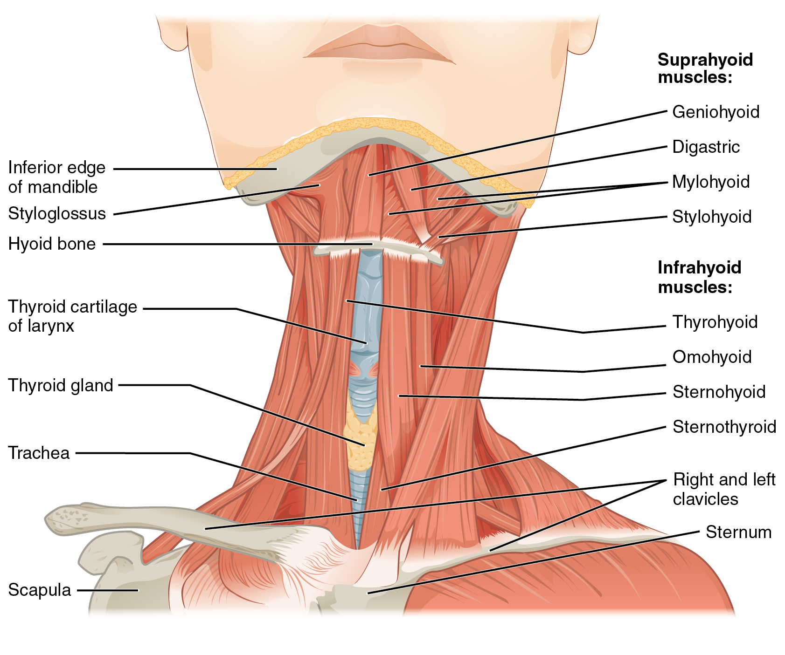
The suprahyoid muscles raise the hyoid bone, the floor of the mouth, and the larynx during deglutition. These include thedigastricmuscle, which has anterior and posterior bellies that work to elevate the hyoid bone and larynx when one swallows; it also depresses the mandible. Thestylohyoidmuscle moves the hyoid bone posteriorly, elevating the larynx, and themylohyoidmuscle lifts it and helps press the tongue to the top of the mouth. Thegeniohyoiddepresses the mandible in addition to raising and pulling the hyoid bone anteriorly.
The strap-like infrahyoid muscles generally depress the hyoid bone and control the position of the larynx. Theomohyoidmuscle, which has superior and inferior bellies, depresses the hyoid bone in conjunction with thesternohyoidandthyrohyoidmuscles. The thyrohyoid muscle also elevates the larynx’s thyroid cartilage, whereas thesternothyroiddepresses it to create different tones of voice.
The head, attached to the top of the vertebral column, is balanced, moved, and rotated by the neck muscles (Table \(\PageIndex{3}\) ). When these muscles act unilaterally, the head rotates. When they contract bilaterally, the head flexes or extends. The major muscle that laterally flexes and rotates the head is thesternocleidomastoid. In addition, both muscles working together are the flexors of the head. Place your fingers on both sides of the neck and turn your head to the left and to the right. You will feel the movement originate there. This muscle divides the neck into anterior and posterior triangles when viewed from the side (Figure \(\PageIndex{8}\) ).
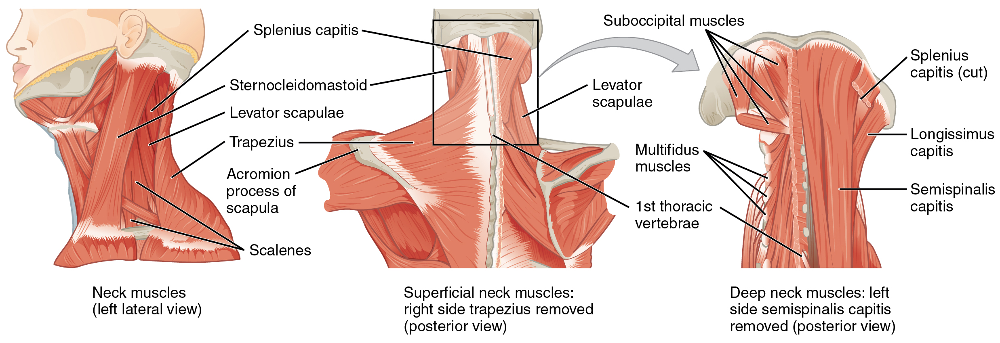
| Movement | Target | Target motion direction | Prime mover | Origin | Insertion |
|---|---|---|---|---|---|
| Rotates and tilts head to the side; tilts head forward | Skull; vertebrae | Individually: rotates head to opposite side; bilaterally: flexion | Sternocleidomastoid | Sternum; clavicle | Temporal bone (mastoid process); occipital bone |
| Rotates and tilts head backward | Skull; vertebrae | Individually: laterally flexes and rotates head to same side; bilaterally: extension | Semispinalis capitis | Transverse and articular processes of cervical and thoracic vertebra | Occipital bone |
| Rotates and tilts head to the side; tilts head backward | Skull; vertebrae | Individually: laterally flexes and rotates head to same side; bilaterally: extension | Splenius capitis | Spinous processes of cervical and thoracic vertebra | Temporal bone (mastoid process); occipital bone |
| Rotates and tilts head to the side; tilts head backward | Skull; vertebrae | Individually: laterally flexes and rotates head to same side; bilaterally: extension | Longissimus capitis | Transverse and articular processes of cervical and thoracic vertebra | Temporal bone (mastoid process) |
The posterior muscles of the neck are primarily concerned with head movements, like extension. The back muscles stabilize and move the vertebral column, and are grouped according to the lengths and direction of the fascicles.
Thespleniusmuscles originate at the midline and run laterally and superiorly to their insertions. From the sides and the back of the neck, thesplenius capitisinserts onto the head region, and thesplenius cervicisextends onto the cervical region. These muscles can extend the head, laterally flex it, and rotate it (Figure \(\PageIndex{9}\) ).
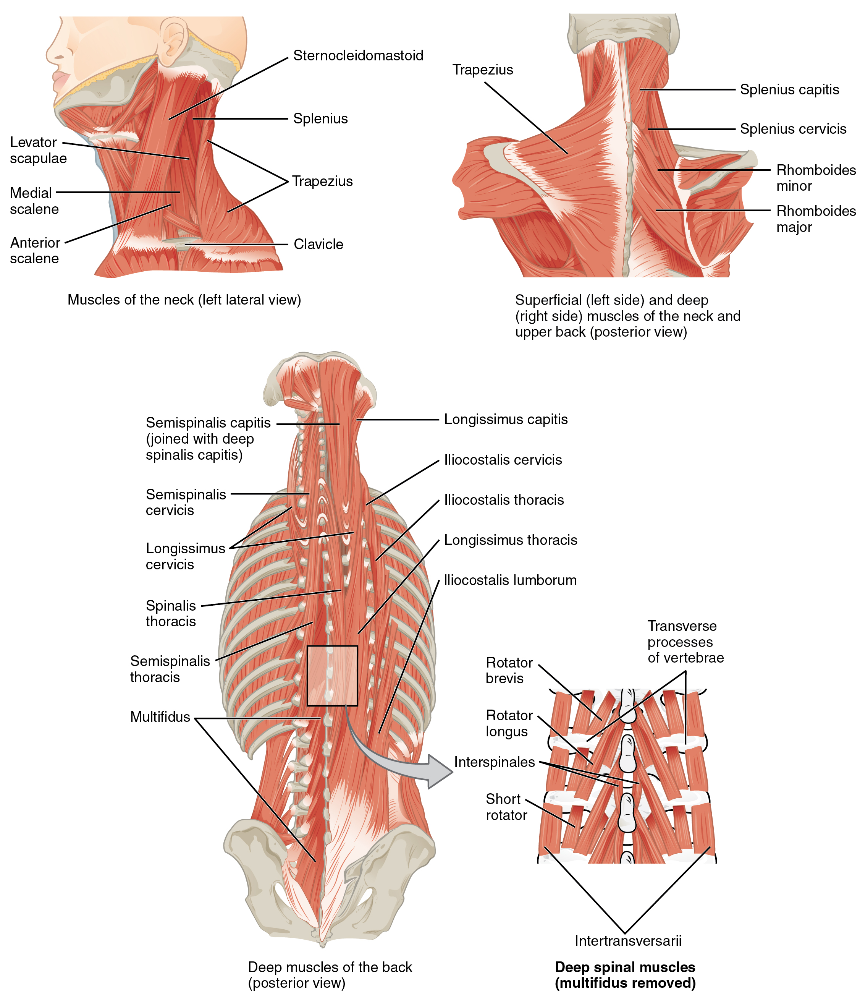
Theerector spinae groupforms the majority of the muscle mass of the back and it is the primary extensor of the vertebral column. It controls flexion, lateral flexion, and rotation of the vertebral column, and maintains the lumbar curve. The erector spinae comprises the iliocostalis (laterally placed) group, the longissimus (intermediately placed) group, and the spinalis (medially placed) group.
Theiliocostalis groupincludes theiliocostalis cervicis, associated with the cervical region; theiliocostalis thoracis, associated with the thoracic region; and theiliocostalis lumborum, associated with the lumbar region. The three muscles of thelongissimus groupare thelongissimus capitis, associated with the head region; thelongissimus cervicis, associated with the cervical region; and thelongissimus thoracis, associated with the thoracic region. The third group, thespinalis group, comprises thespinalis capitis(head region), thespinalis cervicis(cervical region), and thespinalis thoracis(thoracic region).
Thetransversospinalesmuscles run from the transverse processes to the spinous processes of the vertebrae. Similar to the erector spinae muscles, the semispinalis muscles in this group are named for the areas of the body with which they are associated. The semispinalis muscles include thesemispinalis capitis, thesemispinalis cervicis, and thesemispinalis thoracis. Themultifidusmuscle of the lumbar region helps extend and laterally flex the vertebral column.
Important in the stabilization of the vertebral column is thesegmental muscle group, which includes the interspinales and intertransversarii muscles. These muscles bring together the spinous and transverse processes of each consecutive vertebra. Finally, thescalene muscleswork together to flex, laterally flex, and rotate the head. They also contribute to deep inhalation. The scalene muscles include theanterior scalenemuscle (anterior to the middle scalene), themiddle scalenemuscle (the longest, intermediate between the anterior and posterior scalenes), and theposterior scalenemuscle (the smallest, posterior to the middle scalene).
📖 OpenStax Anatomy & Physiology 2e, Section 11.4. openstax.org · CC BY 4.0
- Identify the intrinsic skeletal muscles of the back and neck, and the skeletal muscles of the abdominal wall and thorax
- Identify the movement and function of the intrinsic skeletal muscles of the back and neck, and the skeletal muscles of the abdominal wall and thorax
It is a complex job to balance the body on two feet and walk upright. The muscles of the vertebral column, thorax, and abdominal wall extend, flex, and stabilize different parts of the body’s trunk. The deep muscles of the core of the body help maintain posture as well as carry out other functions. The brain sends out electrical impulses to these various muscle groups to control posture by alternate contraction and relaxation. This is necessary so that no single muscle group becomes fatigued too quickly. If any one group fails to function, body posture will be compromised.
There are four pairs of abdominal muscles that cover the anterior and lateral abdominal region and meet at the anterior midline. These muscles of the anterolateral abdominal wall can be divided into four groups: the external obliques, the internal obliques, the transversus abdominis, and the rectus abdominis (Figure 11.16 and Table 11.6).
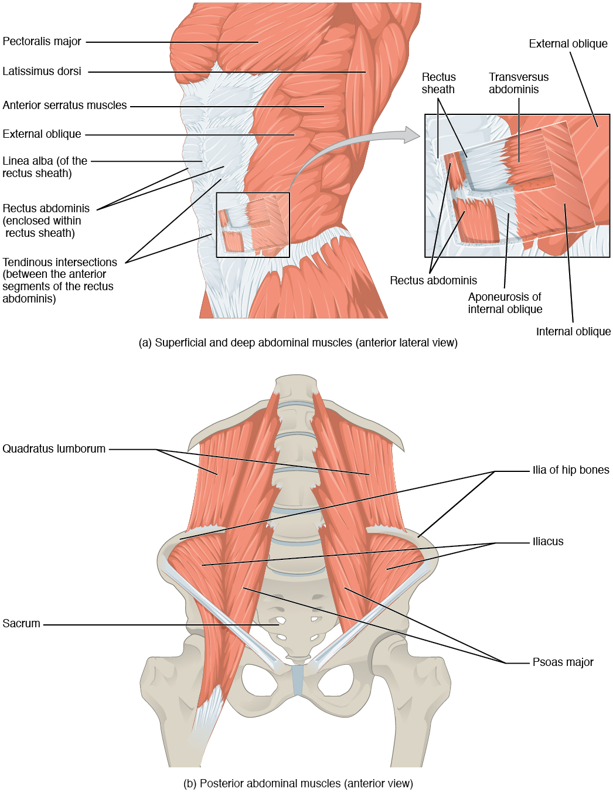
| Movement | Target | Target motion direction | Prime mover | Origin | Insertion |
|---|---|---|---|---|---|
| Twisting at waist; also bending to the side | Vertebral column | Supination; lateral flexion | External obliques; internal obliques | Ribs 5–12; ilium | Ribs 7–10; linea alba; ilium |
| Squeezing abdomen during forceful exhalations, defecation, urination, and childbirth | Abdominal cavity | Compression | Transversus abdominis | Ilium; ribs 5–10 | Sternum; linea alba; pubis |
| Sitting up | Vertebral column | Flexion | Rectus abdominis | Pubis | Sternum; ribs 5 and 7 |
| Bending to the side | Vertebral column | Lateral flexion | Quadratus lumborum | Ilium; ribs 5–10 | Rib 12; vertebrae L1–L4 |
There are three flat skeletal muscles in the antero-lateral wall of the abdomen. Theexternal oblique, closest to the surface, extend inferiorly and medially, in the direction of sliding one’s four fingers into pants pockets. Perpendicular to it is the intermediateinternal oblique, extending superiorly and medially, the direction the thumbs usually go when the other fingers are in the pants pocket. The deep muscle, thetransversus abdominis, is arranged transversely around the abdomen, similar to the front of a belt on a pair of pants. This arrangement of three bands of muscles in different orientations allows various movements and rotations of the trunk. The three layers of muscle also help to protect the internal abdominal organs in an area where there is no bone.
Thelinea albais a white, fibrous band that is made of the bilateralrectus sheathsthat join at the anterior midline of the body. These enclose therectus abdominismuscles (a pair of long, linear muscles, commonly called the “sit-up” muscles) that originate at the pubic crest and symphysis, and extend the length of the body’s trunk. Each muscle is segmented by three transverse bands of collagen fibers called thetendinous intersections. This results in the look of “six-pack abs,” as each segment hypertrophies on individuals at the gym who do many sit-ups.
The posterior abdominal wall is formed by the lumbar vertebrae, parts of the ilia of the hip bones, psoas major and iliacus muscles, andquadratus lumborummuscle. This part of the core plays a key role in stabilizing the rest of the body and maintaining posture.
Those who have a muscle or joint injury will most likely be sent to a physical therapist (PT) after seeing their regular doctor. PTs have a master’s degree or doctorate, and are highly trained experts in the mechanics of body movements. Many PTs also specialize in sports injuries.
If you injured your shoulder while you were kayaking, the first thing a physical therapist would do during your first visit is to assess the functionality of the joint. The range of motion of a particular joint refers to the normal movements the joint performs. The PT will ask you to abduct and adduct, circumduct, and flex and extend the arm. The PT will note the shoulder’s degree of function, and based on the assessment of the injury, will create an appropriate physical therapy plan.
The first step in physical therapy will probably be applying a heat pack to the injured site, which acts much like a warm-up to draw blood to the area, to enhance healing. You will be instructed to do a series of exercises to continue the therapy at home, followed by icing, to decrease inflammation and swelling, which will continue for several weeks. When physical therapy is complete, the PT will do an exit exam and send a detailed report on the improved range of motion and return of normal limb function to your doctor. Gradually, as the injury heals, the shoulder will begin to function correctly. A PT works closely with patients to help them get back to their normal level of physical activity.
The muscles of the chest serve to facilitate breathing by changing the size of the thoracic cavity (Table 11.7). When you inhale, your chest rises because the cavity expands. Alternately, when you exhale, your chest falls because the thoracic cavity decreases in size.
| Movement | Target | Target motion direction | Prime mover | Origin | Insertion |
|---|---|---|---|---|---|
| Inhalation; exhalation | Thoracic cavity | Compression; expansion | Diaphragm | Sternum; ribs 6–12; lumbar vertebrae | Central tendon |
| Inhalation;exhalation | Ribs | Elevation (expands thoracic cavity) | External intercostals | Rib superior to each intercostal muscle | Rib inferior to each intercostal muscle |
| Forced exhalation | Ribs | Movement along superior/inferior axis to bring ribs closer together | Internal intercostals | Rib inferior to each intercostal muscle | Rib superior to each intercostal muscle |
The change in volume of the thoracic cavity during breathing is due to the alternate contraction and relaxation of thediaphragm(Figure 11.17). It separates the thoracic and abdominal cavities, and is dome-shaped at rest. The superior surface of the diaphragm is convex, creating the elevated floor of the thoracic cavity. The inferior surface is concave, creating the curved roof of the abdominal cavity.
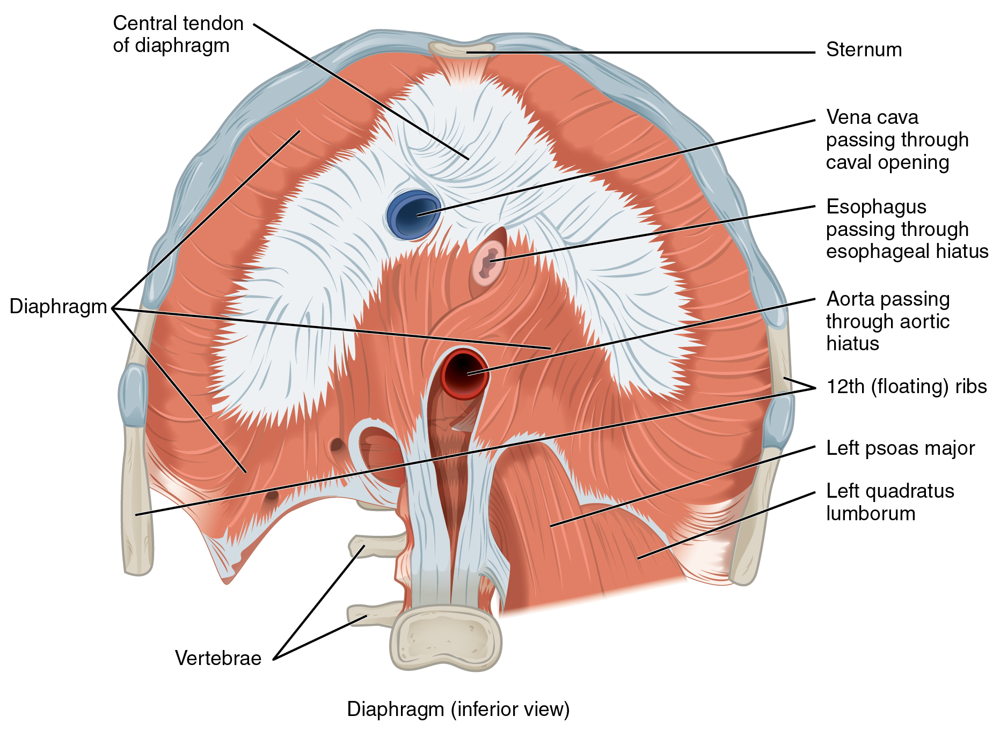
Defecating, urination, and even childbirth involve cooperation between the diaphragm and abdominal muscles (this cooperation is referred to as the “Valsalva maneuver”). You hold your breath by a steady contraction of the diaphragm; this stabilizes the volume and pressure of the peritoneal cavity. When the abdominal muscles contract, the pressure cannot push the diaphragm up, so it increases pressure on the intestinal tract (defecation), urinary tract (urination), or reproductive tract (childbirth).
The inferior surface of the pericardial sac and the inferior surfaces of the pleural membranes (parietal pleura) fuse onto the central tendon of the diaphragm. To the sides of the tendon are the skeletal muscle portions of the diaphragm, which insert into the tendon while having a number of origins including the xiphoid process of the sternum anteriorly, the inferior six ribs and their cartilages laterally, and the lumbar vertebrae and 12th ribs posteriorly.
The diaphragm also includes three openings for the passage of structures between the thorax and the abdomen. The inferior vena cava passes through thecaval opening, and the esophagus and attached nerves pass through the esophageal hiatus. The aorta, thoracic duct, and azygous vein pass through the aortic hiatus of the posterior diaphragm.
#### The Intercostal Muscles
There are three sets of muscles, calledintercostal muscles, which span each of the intercostal spaces. The principal role of the intercostal muscles is to assist in breathing by changing the dimensions of the rib cage (Figure 11.18).
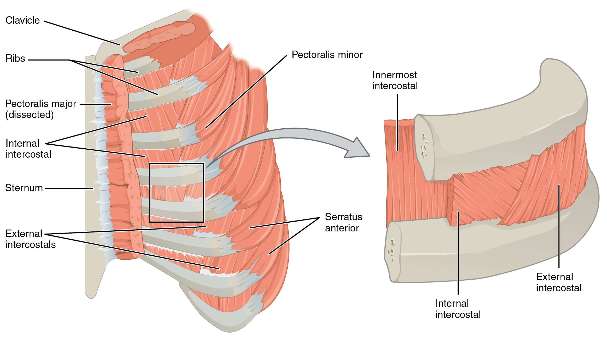
The 11 pairs of superficialexternal intercostalmuscles aid in inspiration of air during breathing because when they contract, they raise the rib cage, which expands it. The 11 pairs ofinternal intercostalmuscles, just under the externals, are used for expiration because they draw the ribs together to constrict the rib cage. Theinnermost intercostalmuscles are the deepest, and they act as synergists for the action of the internal intercostals.
The pelvic floor is a muscular sheet that defines the inferior portion of the pelvic cavity. Thepelvic diaphragm, spanning anteriorly to posteriorly from the pubis to the coccyx, comprises the levator ani and the ischiococcygeus. Its openings include the anal canal and urethra, and the vagina in females.
The largelevator aniconsists of two skeletal muscles, thepubococcygeusand theiliococcygeus(Figure 11.19). The levator ani is considered the most important muscle of the pelvic floor because it supports the pelvic viscera. It resists the pressure produced by contraction of the abdominal muscles so that the pressure is applied to the colon to aid in defecation and to the uterus to aid in childbirth (assisted by theischiococcygeus, which pulls the coccyx anteriorly). This muscle also creates skeletal muscle sphincters at the urethra and anus.
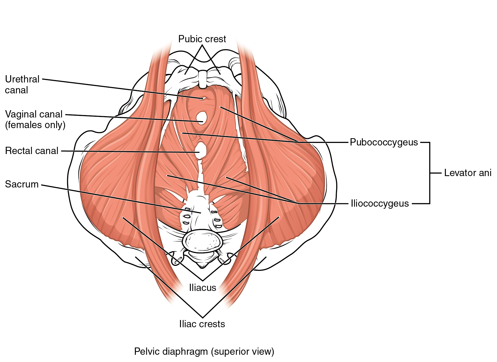
Theperineumis the diamond-shaped space between the pubic symphysis (anteriorly), the coccyx (posteriorly), and the ischial tuberosities (laterally), lying just inferior to the pelvic diaphragm (levator ani and coccygeus). Divided transversely into triangles, the anterior is theurogenital triangle, which includes the external genitals. The posterior is theanal triangle, which contains the anus (Figure 11.20). The perineum is also divided into superficial and deep layers with some of the muscles common to people of any sex (Figure 11.21). Females also have thecompressor urethraeand thesphincter urethrovaginalis, which function to close the vagina. In males, there is thedeep transverse perinealmuscle that plays a role in ejaculation.
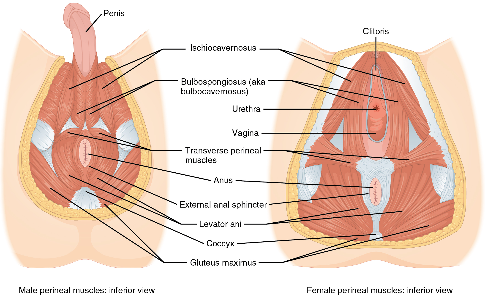
![This table describes the muscles of the perineum that are common to men and women. The levator ani pubococcygeus and levator ani iliococcygeus control movements during defaction, urination, coughing, and giving birth. They originate in the pubis and ischium. The superficial transverse perineal supports the perineal body maintaining the anus at the center of the perineum. It originates in the ischium. The bulbospongiosus is a superficial muscle that causes an involuntary response that compresses the urethra when excreting urine in both sexes or while ejaculating in males; it also aids in erection of the penis in males. It originates in the perineal body. The ischiocavernosus is a superficial muscle that compresses veins to maintain erection of the penis in males and erection of the clitoris in females. It originates in the ischium, ischial rami, and pubic rami. The external uretral sphincter is a deep muscle that voluntarily compresses the urethra during urination. It originates in the ischial rami and pubic rami. The external anal sphincter is a deep muscle that closes the anus. It originates in the anoccoccygeal ligament.](images/ch11/fig11-21-this-table-describes-the-muscles-of-the-.jpg)
📖 OpenStax Anatomy & Physiology 2e, Section 11.5. openstax.org · CC BY 4.0
- Identify the muscles of the pectoral girdle and upper limbs
- Identify the movement and function of the pectoral girdle and upper limbs
Muscles of the shoulder and upper limb can be divided into four groups: muscles that stabilize and position the pectoral girdle, muscles that move the arm, muscles that move the forearm, and muscles that move the wrists, hands, and fingers. Thepectoral girdle, or shoulder girdle, consists of the lateral ends of the clavicle and scapula, along with the proximal end of the humerus, and the muscles covering these three bones to stabilize the shoulder joint. The girdle creates a base from which the head of the humerus, in its ball-and-socket joint with the glenoid fossa of the scapula, can move the arm in multiple directions.
Muscles that position the pectoral girdle are located either on the anterior thorax or on the posterior thorax (Figure \(\PageIndex{1}\) and Table \(\PageIndex{1}\) ). The anterior muscles include thesubclavius,pectoralis minor, andserratus anterior. The posterior muscles include thetrapezius,rhomboid major, andrhomboid minor. When the rhomboids are contracted, your scapula moves medially, which can pull the shoulder and upper limb posteriorly.
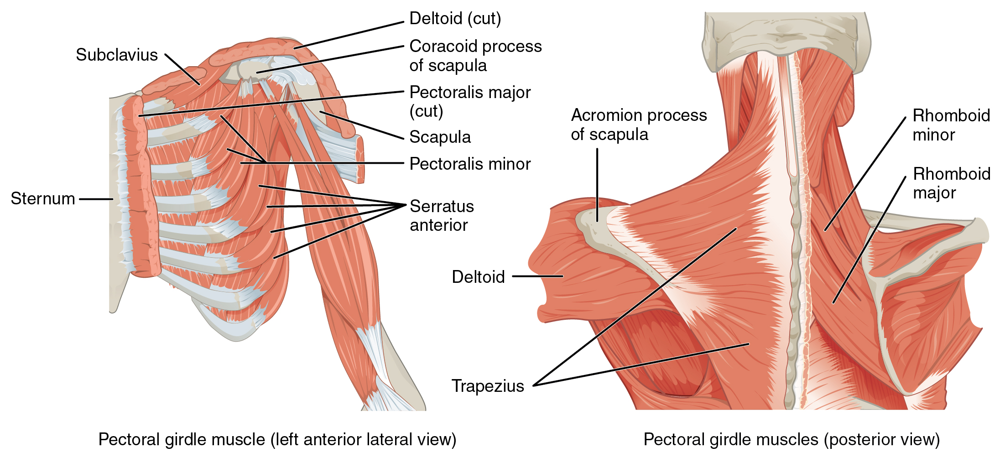
| Position in the thorax | Movement | Target | Target motion direction | Prime mover | Origin | Insertion |
|---|---|---|---|---|---|---|
| Anterior thorax | Stabilizes clavicle during movement by depressing it | Clavicle | Depression | Subclavius | First rib | Inferior surface of clavicle |
| Anterior thorax | Rotates shoulder anteriorly (throwing motion); assists with inhalation | Scapula; ribs | Scapula: depresses; ribs: elevates | Pectoralis minor | Anterior surfaces of certain ribs (2–4 or 3–5) | Coracoid process of scapula |
| Anterior thorax | Moves arm from side of body to front of body; assists with inhalation | Scapula; ribs | Scapula: protracts; ribs: elevates | Serratus anterior | Muscle slips from certain ribs (1–8 or 1–9) | Anterior surface of vertebral border of scapula |
| Posterior thorax | Elevates shoulders (shrugging); pulls shoulder blades together; tilts head backwards | Scapula; cervical spine | Scapula: rotests inferiorly, retracts, elevates, and depresses; spine: extends | Trapezius | Skull; vertebral column | Acromion and spine of scapula; clavicle |
| Posterior thorax | Stabilizes scapula during pectoral girdle movement | Scapula | Retracts; rotates inferiorly | Rhomboid major | Thoracic vertebrae (T2–T5) | Medial border of scapula |
| Posterior thorax | Stabilizes scapula during pectoral girdle movement | Scapula | Retracts; rotates inferiorly | Rhomboid minor | Cervical and thoracic vertebrae (C7 and T1) | Medial border of scapula |
Similar to the muscles that position the pectoral girdle, muscles that cross the shoulder joint and move the humerus bone of the arm include both axial and scapular muscles (Figure \(\PageIndex{2}\) and Figure \(\PageIndex{3}\) ). The two axial muscles are the pectoralis major and the latissimus dorsi. Thepectoralis majoris thick and fan-shaped, covering much of the superior portion of the anterior thorax. The broad, triangularlatissimus dorsiis located on the inferior part of the back, where it inserts into a thick connective tissue sheath called an aponeurosis.
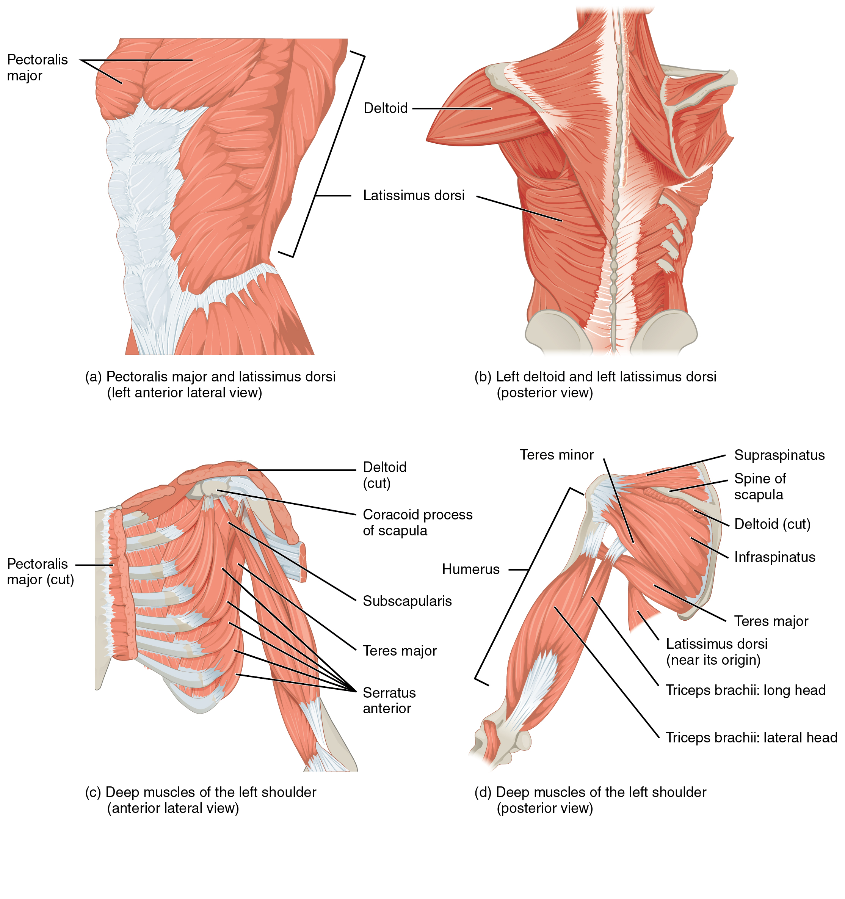
![This table describes the muscles that move the humerus. The pectoralis major is an axial muscle that brings the elbows together and moves the elbows up (as during an uppercut punch). It originates in the clavicle, sternum, cartilage of ribs 1 through 6 or 1 through 7, and the aponeurosis of the external oblique muscle. The latissimus dorsi is an axial muscle that moves the elbow back (as in elbowing someone standing behind you) or spreads the elbows apart. It originates in the thoracic vertebrae (T7 through T12), the lower vertebrae, ribs 9 through 12, and the iliac crest. The deltoid is a scapular muscle that lifts arms at the shoulder. It originates in the trapezius, clavicle, acromion, and spine of scapula. The subscapularis is a scapular muscle that assists the pectoralis major in bringing the elbows together and stabilizes the shoulder joint during movement of the pectoral girdle. It originates in the subscapular fossa of the scapula. The supraspinatus is a scapular muscle that rotates the elbow outwards, as during a tennis swing. It originates in the supraspinous fossa of the scapula. The infraspinatus is a scapular muscle that rotates the elbow outwards, as during a tennis swing. It originates in the infraspinous fossa of the scapula. The teres major is a scapular muscle that assists with medial rotation at the shoulder. It originates in the posterior surface of the scapula. The teres minor is a scapular muscle that assists the infraspinatus in rotating the elbow outwards. It originates in the lateral border of the dorsal scapular surface. The coracobra chialis is a scapular muscle that moves the elbow up and across the body, as when putting a hand on the chest. It originates in the coracoid process of the scapula.](images/ch11/fig11-24-this-table-describes-the-muscles-that-mo.jpg)
The rest of the shoulder muscles originate on the scapula. The anatomical and ligamental structure of the shoulder joint and the arrangements of the muscles covering it, allows the arm to carry out different types of movements. Thedeltoid, the thick muscle that creates the rounded lines of the shoulder is the major abductor of the arm, but it also facilitates flexing and medial rotation, as well as extension and lateral rotation. Thesubscapularisoriginates on the anterior scapula and medially rotates the arm. Named for their locations, thesupraspinatus(superior to the spine of the scapula) and theinfraspinatus(inferior to the spine of the scapula) abduct the arm, and laterally rotate the arm, respectively. The thick and flatteres majoris inferior to the teres minor and extends the arm, and assists in adduction and medial rotation of it. The longteres minorlaterally rotates and extends the arm. Finally, thecoracobrachialisflexes and adducts the arm.
The tendons of the deep subscapularis, supraspinatus, infraspinatus, and teres minor connect the scapula to the humerus, forming therotator cuff(musculotendinous cuff), the circle of tendons around the shoulder joint. When baseball pitchers undergo shoulder surgery it is usually on the rotator cuff, which becomes pinched and inflamed, and may tear away from the bone due to the repetitive motion of bring the arm overhead to throw a fast pitch.
The forearm, made of the radius and ulna bones, has four main types of action at the hinge of the elbow joint: flexion, extension, pronation, and supination. The forearm flexors include the biceps brachii, brachialis, and brachioradialis. The extensors are thetriceps brachiiandanconeus. The pronators are thepronator teresand thepronator quadratus, and thesupinatoris the only one that turns the forearm anteriorly. When the forearm faces anteriorly, it is supinated. When the forearm faces posteriorly, it is pronated.
The biceps brachii, brachialis, and brachioradialis flex the forearm. The two-headedbiceps brachiicrosses the shoulder and elbow joints to flex the forearm, also taking part in supinating the forearm at the radioulnar joints and flexing the arm at the shoulder joint. Deep to the biceps brachii, thebrachialisprovides additional power in flexing the forearm. Finally, thebrachioradialiscan flex the forearm quickly or help lift a load slowly. These muscles and their associated blood vessels and nerves form theanterior compartment of the arm(anterior flexor compartment of the arm) (Figure \(\PageIndex{4}\) and Figure \(\PageIndex{5}\) ).
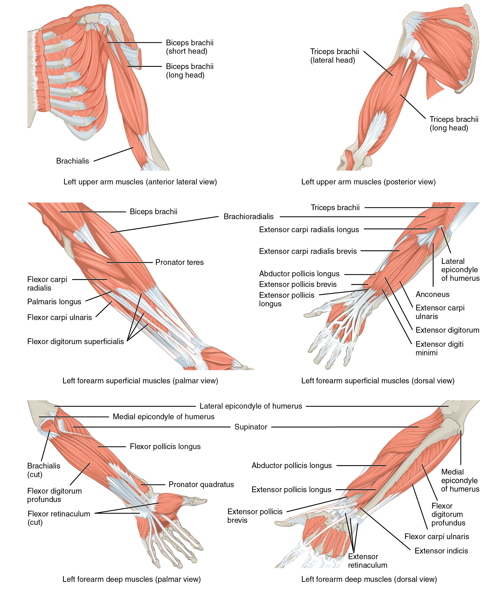
![This table describes the muscles that move the forearm. The biceps brachii are anterior muscles that perform a bicep curl; they also allow the palm of the hand to point toward the body while flexing. They originate in the coracoid process and the tubercle above the glenoid cavity. The brachialis originates in the front of the distal humerus. The brachioradialis is an anterior muscle that assists and stablizes the elbow during bicep-curl motion. It originates in the lateral supracondylar ridge at the distal end of the humerus. The triceps brachii are posterior muscles that extend the forearm, as during a punch. They originate in the infraglenoid tubercle of the scapula, the posterior shaft of the humerus, and the posterior humeral shaft distal to the radial groove. The aconeus is a posterior muscle that assists in extending the forearm; it also allows the forearm to extend away from the body. It originates in the lateral epicondyle of the humerus. The pronator teres is an anterior muscle that turns the hand palm-down. It originates in the medial epicondyle of the humerus and the coronoid process of the ulna. The pronator quadratus is an anterior muscle that assists in turning the hand palm-down. It originates in the distal portion of the anterior ulnar shaft. The supinator is a posterior muscle that turns the hand palm-down. It originates in the lateral epicondyle of the humerus and the proximal ulna.](images/ch11/fig11-26-this-table-describes-the-muscles-that-mo.jpg)
Wrist, hand, and finger movements are facilitated by two groups of muscles. The forearm is the origin of theextrinsic muscles of the hand. The palm is the origin of the intrinsic muscles of the hand.
#### Muscles of the Arm That Move the Wrists, Hands, and Fingers
The muscles in theanterior compartment of the forearm(anterior flexor compartment of the forearm) originate on the humerus and insert onto different parts of the hand. These make up the bulk of the forearm. From lateral to medial, thesuperficial anterior compartment of the forearmincludes theflexor carpi radialis,palmaris longus,flexor carpi ulnaris, andflexor digitorum superficialis. The flexor digitorum superficialis flexes the hand as well as the digits at the knuckles, which allows for rapid finger movements, as in typing or playing a musical instrument (see Figure \(\PageIndex{7}\) and Table \(\PageIndex{2}\) ). However, poor ergonomics can irritate the tendons of these muscles as they slide back and forth with the carpal tunnel of the anterior wrist and pinch the median nerve, which also travels through the tunnel, causing Carpal Tunnel Syndrome. Thedeep anterior compartmentproduces flexion and bends fingers to make a fist. These are theflexor pollicis longusand theflexor digitorum profundus.
The muscles in thesuperficial posterior compartment of the forearm(superficial posterior extensor compartment of the forearm) originate on the humerus. These are theextensor radialis longus,extensor carpi radialis brevis,extensor digitorum,extensor digiti minimi, and theextensor carpi ulnaris.
The muscles of thedeep posterior compartment of the forearm(deep posterior extensor compartment of the forearm) originate on the radius and ulna. These include theabductor pollicis longus,extensor pollicis brevis,extensor pollicis longus, andextensor indicis(see Figure \(\PageIndex{6}\) ).
![This table describes the muscles that move the wrist, hands, and forearm. These muscles make up the superficial anterior compartment of the forearm. The flexor carpi radialis bends the wrist toward the body; it also tilts the hand to the side away from the body. It originates in the medial epicondyle of the humerus. The palmaris longus assists in bending the hand up toward the shoulder. It originates in the medial epicondyle of the humerus. The flexor carpi ulnaris assists in bending the hand up toward the shoulder; it also tilts the hand to the side away from the body and stabilizes the wrist. It originates in the medial epicondyle of the humerus, the olecranon process, and the posterior surface of the ulna. The flexor digitorum superficialis bends the fingers to make a fist. It originates in the medial epicondyle of the humerus, the coronoid process of the ulna, and the shaft of the radius. These muscles make up the deep anterior compartment of the forearm. The flexor pollicis longus bends the tip of the thumb. It originates in the anterior surface of the radius and the interosseous membrane. The flexor digitorum profundus bends the fingers to make a fist; it also bends the wrist toward the body. It originates in the coronoid process, the anteromedial surface of the ulna, and the interosseous membrane. These muscles make up the superficial posterior compartment of the forearm. The extensor radialis longus straightens the wrist away from the body; it also tilts the hand to the side away from the body. It originates in the lateral supracondylar ridge of the humerus. The extensor carpi radialis brevis assists the extensor radialis longus in extending and abducting the wrist; it also stabilizes the hand during finger flexion. It originates in the lateral epicondyle of the humerus. The extensor digitorum opens the fingers and moves them sideways away from the body. It originates in the lateral epicondyle of the humerus. The extensor digiti minimi extends the little finger. It originates in the lateral epicondyle of the humerus. The extensor carpi ulnaris straightens the wrist away from the body; it also tilts the hand to the side toward the body. It originates in the lateral epicondyle of the humerus and the posterior of the ulna. These muscles make up the deep posterior compartment of the forearm. The abductor pollicis longus moves the thumb sideways toward the body; it also extends the thumb and moves the hand sideways toward the body. It originates in the posterior surface of the radius and ulna and in the interosseous membrane. The extensor pollicis brevis extends the thumb. It originates in the dorsal shaft of the radius and ulna and in the interosseous membrane. The extensor pollicis longus extends the thumb. It originates in the dorsal shaft of the radius and ulna and in the interosseous membrane. The extensor indicis extends the index finger; it also straightens the wrist away from the body. It originates in the posterior surface of the distal ulna and in the interosseous membrane.](images/ch11/fig11-27-this-table-describes-the-muscles-that-mo.jpg)
The tendons of the forearm muscles attach to the wrist and extend into the hand. Fibrous bands calledretinaculasheath the tendons at the wrist. Theflexor retinaculumextends over the palmar surface of the hand while theextensor retinaculumextends over the dorsal surface of the hand.
#### Intrinsic Muscles of the Hand
Theintrinsic muscles of the handboth originate and insert within it (Figure 11.28). These muscles allow your fingers to also make precise movements for actions, such as typing or writing. These muscles are divided into three groups. Thethenarmuscles are on the radial aspect of the palm. Thehypothenarmuscles are on the medial aspect of the palm, and theintermediatemuscles are midpalmar.
The thenar muscles include theabductor pollicis brevis,opponens pollicis,flexor pollicis brevis, and theadductor pollicis. These muscles form thethenar eminence, the rounded contour of the base of the thumb, and all act on the thumb. The movements of the thumb play an integral role in most precise movements of the hand.
The hypothenar muscles include theabductor digiti minimi,flexor digiti minimi brevis, and theopponens digiti minimi. These muscles form thehypothenar eminence, the rounded contour of the little finger, and as such, they all act on the little finger. Finally, the intermediate muscles act on all the fingers and include thelumbrical, thepalmar interossei, and thedorsal interossei.
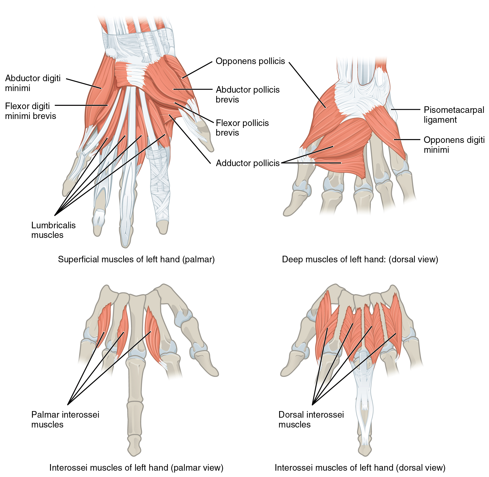
| Muscle | Movement | Target | Target motion direction | Prime mover | Origin | Insertion |
|---|---|---|---|---|---|---|
| Thenar muscles | Moves thumb toward body | Thumb | Abduction | Abductor pollicis brevis | Flexor retinaculum; and nearby carpals | Lateral base of proximal phalanx of thumb |
| Thenar muscles | Moves thumb across palm to touch other fingers | Thumb | Opposition | Opponens pollicis | Flexor retinaculum; trapezium | Anterior of first metacarpal |
| Thenar muscles | Flexes thumb | Thumb | Flexion | Flexor pollicis brevis | Flexor retinaculum; trapezium | Lateral base of proximal phalanx of thumb |
| Thenar muscles | Moves thumb away from body | Thumb | Adduction | Adductor pollicis | Capitate bone; bases of metacarpals 2–4; front of metacarpal 3 | Medial base of proximal phalanx of thumb |
| Hypothenar muscles | Moves little finger toward body | Little finger | Abduction | Abductor digiti minimi | Pisiform bone | Medial side of proximal phalanx of little finger |
| Hypothenar muscles | Flexes little finger | Little finger | Flexion | Flexor digiti minimi brevis | Hamate bone; flexor retinaculum | Medial side of proximal phalanx of little finger |
| Hypothenar muscles | Moves little finger across palm to touch thumb | Little finger | Opposition | Opponens digiti minimi | Hamate bone; flexor retinaculum | Medial side of fifth metacarpal |
| Intermediate muscles | Flexes each finger at metacarpo-phalangeal joints; extends each finger at interphalangeal joints | Fingers | Flexion | Lumbricals | Palm (lateral sides of tendons in flexor digitorum profundus) | Fingers 2–5 (lateral edges of extensional expansions on first phalanges) |
| Intermediate muscles | Adducts and flexes each finger at metacarpo-phalangeal joints; extends each finger at interphalangeal joints | Fingers | Adduction; flexion; extension | Palmar interossei | Side of each metacarpal that faces metacarpal 3 (absent from metacarpal 3) | Extensor expansion on first phalanx of each finger (except finger 3) on side facing finger 3 |
| Intermediate muscles | Abducts and flexes the three middle fingers at metacarpo-phalangeal joints; extends the three middle fingers at interphalangeal joints | Fingers | Abduction; flexion; extension | Dorsal interossei | Sides of metacarpals | Both sides of finger 3; for each other finger, extensor expansion over first phalanx on side opposite finger 3 |
📖 OpenStax Anatomy & Physiology 2e, Section 11.6. openstax.org · CC BY 4.0
- Identify the appendicular muscles of the pelvic girdle and lower limb
- Identify the movement and function of the pelvic girdle and lower limb
The appendicular muscles of the lower body position and stabilize thepelvic girdle, which serves as a foundation for the lower limbs. Comparatively, there is much more movement at the pectoral girdle than at the pelvic girdle. There is very little movement of the pelvic girdle because of its connection with the sacrum at the base of the axial skeleton. The pelvic girdle is less range of motion because it was designed to stabilize and support the body.
What would happen if the pelvic girdle, which attaches the lower limbs to the torso, were capable of the same range of motion as the pectoral girdle? For one thing, walking would expend more energy if the heads of the femurs were not secured in the acetabula of the pelvis. The body’s center of gravity is in the area of the pelvis. If the center of gravity were not to remain fixed, standing up would be difficult as well. Therefore, what the leg muscles lack in range of motion and versatility, they make up for in size and power, facilitating the body’s stabilization, posture, and movement.
#### Gluteal Region Muscles That Move the Femur
Most muscles that insert on the femur (the thigh bone) and move it, originate on the pelvic girdle. Thepsoas majorandiliacusmake up theiliopsoas group. Some of the largest and most powerful muscles in the body are the gluteal muscles orgluteal group. Thegluteus maximusis the largest; deep to the gluteus maximus is thegluteus medius, and deep to the gluteus medius is thegluteus minimus, the smallest of the trio (Figure \(\PageIndex{1}\) and Figure \(\PageIndex{2}\) ).
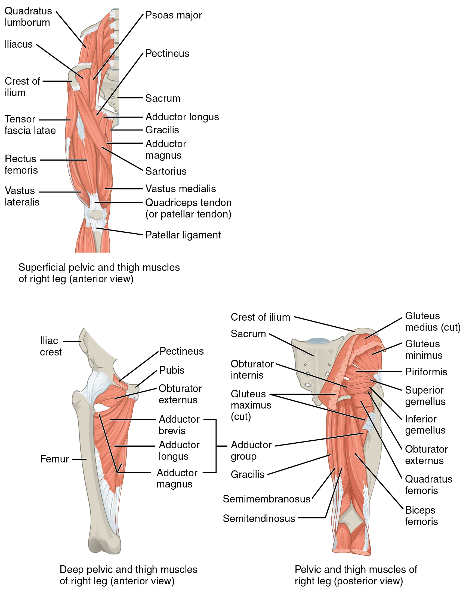
![This table describes gluteal region muscles that move the femur. These muscles make up the iliopsoas group. The psoas major raises the knee at the hip, as if performing a knee attack; it also assists the lateral rotators in twisting the thigh (and lower leg) outward, and assists with bending over and maintaining posture. It originates in the lumbar vertebrae (L1 through L5) and thoracic vertebra (T12). The iliacus raises the knee at the hip, as if performing a knee attack; it also assists the lateral rotators in twisting the thigh (and lower leg) outward, and assists with bending over and maintaining posture. It originates in the iliac fossa, iliac crest, and lateral sacrum. These muscles make up the gluteal group. The gluteous maximus lowers the knee and moves the thigh back, as when getting ready to kick a ball. It originates in the dorsal ilium, sacrum, and coccyx. The gluteus medius opens the thigh, as when doing a split. It originates in the lateral surface of the ilium. The gluteus minimus brings the thighs back together. It originates in the external surface of the ilium. The tensor fascia lata assists with raising the knee at the hip and opening the thighs; it also maintains posture by stabilizing the iliotibial track, which connects to the knee. It originates in the anterior aspect of the iliac crest and the anterior superior iliac spine. These muscles make up the lateral rotators. The piriformis twists the thigh (and lower leg) outward; it also maintains posture by stabilizing the hip joint. It originates in the anterolateral surface of the sacrum. The obturator internus twists the thigh (and lower leg) outward; it also maintains posture by stabilizing the hip joint. It originates in the inner surface of the obturator membrane, the greater sciatic notch, and the margins of the obturator foramen. The superior gemellus twists the thigh (and lower leg) outward; it also maintains posture by stabilizing the hip joint. It originates in the ischial spine. The inferior gemellus twists the thigh (and lower leg) outward; it also maintains posture by stabilizing the hip joint. It originates in the ischial tuberosity. The quatratus femoris twists the thigh (and lower leg) outward; it also maints posture by stabilizing the hip joint. It originates in the ischial tuberosity. These muscles are adductors. The adductor longus brings the thighs back together; it also assists with raising the knee. It originates in the pubis near the pubic symphysis. The adductor brevis brings the thighs back together; it also assists with raising the knee. It originates in teh body of the pubis and in the inferior ramus of the pubis. The adductor magnus brings the thighs back together; it also assists with raising the knee and moving the thigh back. It originates in the ischial rami, the pubic rami, and the ischial tuberosity. The pectineus opens the thigh; it also assists with raising the knee and turning the thigh (and lower leg) inward. It originates in the pectineal line of the pubis.](images/ch11/fig11-30-this-table-describes-gluteal-region-musc.jpg)
Thetensor fascia lataeis a thick, squarish muscle in the superior aspect of the lateral thigh. It acts as a synergist of the gluteus medius and iliopsoas in flexing and abducting the thigh. It also helps stabilize the lateral aspect of the knee by pulling on theiliotibial tract(band), making it taut. Deep to the gluteus maximus, thepiriformis,obturator internus,obturator externus,superior gemellus,inferior gemellus, andquadratus femorislaterally rotate the femur at the hip.
Theadductor longus,adductor brevis, andadductor magnuscan both medially and laterally rotate the thigh depending on the placement of the foot. The adductor longus flexes the thigh, whereas the adductor magnus extends it. Thepectineusadducts and flexes the femur at the hip as well. The pectineus is located in thefemoral triangle, which is formed at the junction between the hip and the leg and also includes the femoral nerve, the femoral artery, the femoral vein, and the deep inguinal lymph nodes.
#### Thigh Muscles That Move the Femur, Tibia, and Fibula
Deep fascia in the thigh separates it into medial, anterior, and posterior compartments (see Figure \(\PageIndex{1}\) and Figure \(\PageIndex{3}\) ). The muscles in themedial compartment of the thighare responsible for adducting the femur at the hip. Along with the adductor longus, adductor brevis, adductor magnus, and pectineus, the strap-likegracilisadducts the thigh in addition to flexing the leg at the knee.
![This table describes the thigh muscles that move the femur, tibia, and fibula. The medial compartment of the thigh consists of the gracilis, which moves the back of the lower legs up toward the buttocks, as when kneeling; it also assists in opening the thighs. It originates in the inferior ramus, the body of the pubis, and the ischial ramus. These muscles, the quadriceps femoris group, make up the anterior compartment of the thigh. The rectus femoris moves the lower leg out in front of the body, as when kicking; it also assists in raising the knee. It originates in the anterior inferior iliac spine and in the superior margin of the acetabulum. The vastus lateralis moves the lower leg out in front of the body, as when kicking. It originates in the greater trochanter, the intertrochanteric line, and the linea aspera. The vastus medialis moves the lower leg out in front of the body, as when kicking. It originates in the linea aspera and the intertrochanteric line. The vastus intermedius moves the lower leg out in front of the body, as when kicking. It originates in the proximal femur shaft. The sartorius moves the back of the lower legs up and back toward the buttocks, as when kneeling; it also assists in moving the thigh diagonally upward and outward as when mounting a bike. It originates in the anterior superior iliac spine. These muscles, the hamstring group, make up the posterior compartment of the thigh. The biceps femoris moves the back of the lower leg up and back toward the buttocks, as when kneeling; it also moves the thigh down and back and twists the thigh (and lower leg) outward. It originates in the ischial tuberosity, linea aspera, and distal femur. The semitendinosus moves the back of the lower legs up toward the buttocks, as when kneeling; it also moves the thigh down and back and twists the thigh (and lower leg) inward. It originates in the ischial tuberosity. The semi-membranosus moves the back of the lower legs up and back toward the buttocks, as when kneeling; it also moves the thigh down and back and twists the thigh (and lower leg) inward. It originates in the ischial tuberosity.](images/ch11/fig11-31-this-table-describes-the-thigh-muscles-t.jpg)
The muscles of theanterior compartment of the thighflex the thigh and extend the leg. This compartment contains thequadriceps femoris group, which actually comprises four muscles that extend and stabilize the knee. Therectus femorisis on the anterior aspect of the thigh, thevastus lateralisis on the lateral aspect of the thigh, thevastus medialisis on the medial aspect of the thigh, and thevastus intermediusis between the vastus lateralis and vastus medialis and deep to the rectus femoris. The tendon common to all four is thequadriceps tendon(patellar tendon), which inserts into the patella and continues below it as thepatellar ligament. The patellar ligament attaches to the tibial tuberosity. In addition to the quadriceps femoris, thesartoriusis a band-like muscle that extends from the anterior superior iliac spine to the medial side of the proximal tibia. This versatile muscle flexes the leg at the knee and flexes, abducts, and laterally rotates the leg at the hip. This muscle allows us to sit cross-legged.
Theposterior compartment of the thighincludes muscles that flex the leg and extend the thigh. The three long muscles on the back of the knee are thehamstring group, which flexes the knee. These are thebiceps femoris,semitendinosus, andsemimembranosus. The tendons of these muscles form thepopliteal fossa, the diamond-shaped space at the back of the knee.
Similar to the thigh muscles, the muscles of the leg are divided by deep fascia into compartments, although the leg has three: anterior, lateral, and posterior (Figure \(\PageIndex{4}\) and Figure \(\PageIndex{5}\) ).
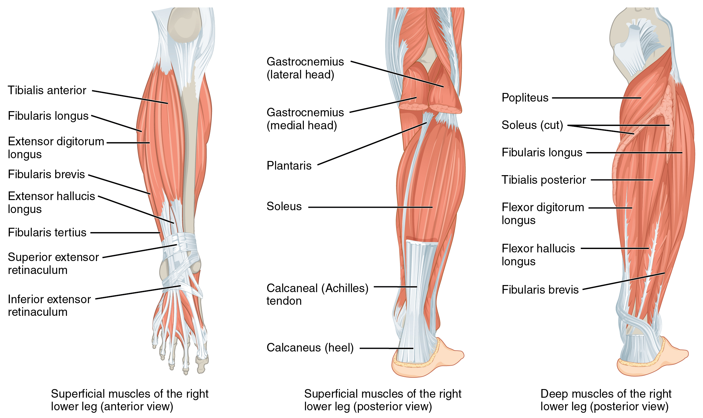
![This tables describes the muscles that move the feet and toes. These muscles make up the anterior compartment of the leg. The tibialis anterior raises the sole of the foot off the ground, as when preparing to foot-tap; it also bends the inside of the foot upwards, as when catching your balance while falling laterally toward the opposite side as the balancing foot. It originates in the lateral condyle and upper tibial shaft and in the interosseous membrane. The extensor hallucis longus raises the sole of the foot off the ground, as when preparing to foot-tap; it also extends the big toe. It originates in the anteromedial fibula shaft and interosseous membrane. The extensor digitorum longus raises the sole of the foot off the ground, as when preparing to foot-tap; it also extends the toes. It originates in the lateral condyle of the tibia, the proximal portion of the fibula, and the interosseous membrane. These muscles make up the lateral compartment of the leg. The fibularis longus lowers the sole of the foot to the ground, as when foot-tapping or jumping; it also bends the inside of the foot downwards, as when catching your balance while falling laterally toward the same side as the balancing foot. It originates in the upper portion of the lateral fibula. The fibularis (peroneus) brevis lowers the side of the foot to the ground, as when foot-tapping or jumping; it also bends the inside of the foot downward, as when catching your balance while falling laterally toward the same side as the balancing foot. It originates in the distal fibula shaft. These superficial muscles make up the posterior compartment of the leg. The gastrocnemius lowers the sole of the foot to the ground, as when foot-tapping or jumping; it also assists in moving the back of the lower legs up and back toward the buttocks. It originates in the medial and lateral condyles of the femur. The soleus lowers the sole of the foot the ground, as when foot-tapping or jumping; it also maintains posture while walking. It originates in the superior tibia, fibula, and interosseous membrane. The plantaris lowers the sole of the foot to the ground, as when foot-tapping or jumping; it also assists in moving the back of the lower legs up and back toward the buttocks. It originates in the posterior femur above the lateral condyle. The tibialis posterior lowers the sole of the foot to the ground, as when foot-tapping or jumping. It originates in the superior tibia and fibula and in the interosseous membrane. These deep muscles also make up the posterior compartment of the leg. The popliteus moves the back of the lower legs up and back toward the buttocks; it also assists in rotation of the leg at the knee and thigh. It originates in the lateral condyle of the femur and the lateral meniscus. The flexor digitorum longus lowers the sole of the foot to the ground, as when foot-tapping or jumping; it also bends the inside of the foot upward and flexes the toes. It originates in the posterior tibia. The flexor hallicis longus flexes the big toe. It originates in the midshaft of the fibula and in the interosseous membrane.](images/ch11/fig11-33-this-tables-describes-the-muscles-that-m.jpg)
The muscles in theanterior compartment of the leg: thetibialis anterior, a long and thick muscle on the lateral surface of the tibia, theextensor hallucis longus, deep under it, and theextensor digitorum longus, lateral to it, all contribute to raising the front of the foot when they contract. Thefibularis tertius, a small muscle that originates on the anterior surface of the fibula, is associated with the extensor digitorum longus and sometimes fused to it, but is not present in all people. Thick bands of connective tissue called thesuperior extensor retinaculum(transverse ligament of the ankle) and theinferior extensor retinaculum, hold the tendons of these muscles in place during dorsiflexion.
Thelateral compartment of the legincludes two muscles: thefibularis longus(peroneus longus) and thefibularis brevis(peroneus brevis). The superficial muscles in theposterior compartment of the legall insert onto thecalcaneal tendon(Achilles tendon), a strong tendon that inserts into the calcaneal bone of the ankle. The muscles in this compartment are large and strong and keep humans upright. The most superficial and visible muscle of the calf is thegastrocnemius. Deep to the gastrocnemius is the wide, flatsoleus. Theplantarisruns obliquely between the two; some people may have two of these muscles, whereas no plantaris is observed in about seven percent of other cadaver dissections. The plantaris tendon is a desirable substitute for the fascia lata in hernia repair, tendon transplants, and repair of ligaments. There are four deep muscles in the posterior compartment of the leg as well: thepopliteus,flexor digitorum longus,flexor hallucis longus, andtibialis posterior.
The foot also has intrinsic muscles, which originate and insert within it (similar to the intrinsic muscles of the hand). These muscles primarily provide support for the foot and its arch, and contribute to movements of the toes (Figure \(\PageIndex{6}\) and Figure \(\PageIndex{7}\) ). The principal support for the longitudinal arch of the foot is a deep fascia calledplantar aponeurosis, which runs from the calcaneus bone to the toes (inflammation of this tissue is the cause of “plantar fasciitis,” which can affect runners. The intrinsic muscles of the foot consist of two groups. Thedorsal groupincludes only one muscle, theextensor digitorum brevis. The second group is theplantar group, which consists of four layers, starting with the most superficial.
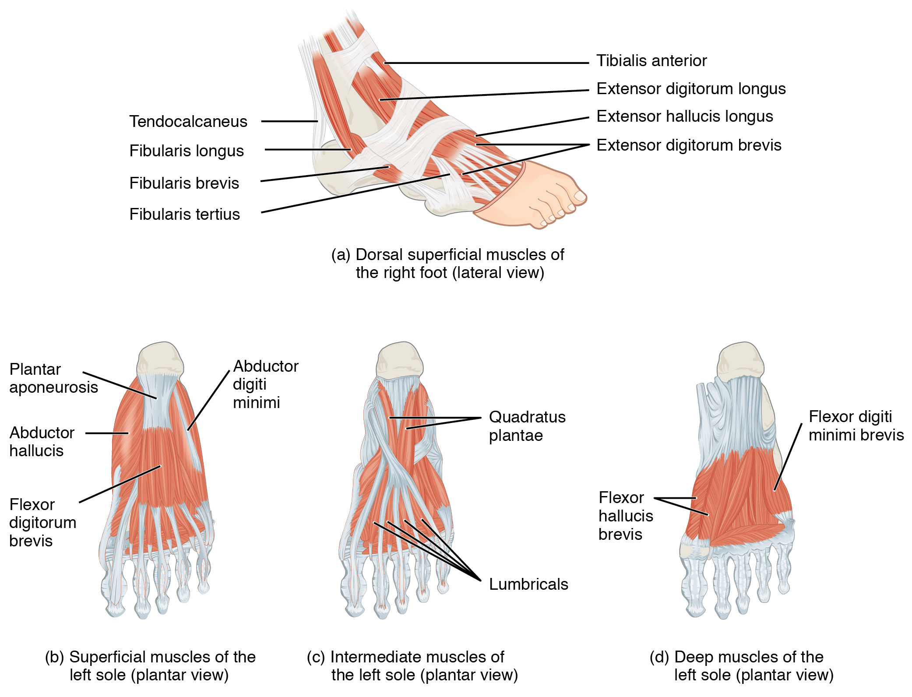
![This table describes intrinsic muscles in the foot. The dorsal group consists of the extensor digitorum brevis, which extends toes 2 through 5. It originates in the calcaneus and the extensor retinaculum. These muscles make up layer 1 of the plantar group. The abductor hallucis abducts and flexes the big toe. It originates in the calcaneal tuberosity and flexor retinaculum. The flexor digitorum brevis flexes toes 2 through 4. It originates in the calcaneal tuberosity. The abductor digiti minimi abducts and flexes the small toe. It originates in the calcaneal tuberosity. These muscles make up layer 2 of the plantar group. The quadratus plantae assists in flexing toes 2 through 5. It originates in the medial and lateral sides of the calcaneus. The lumbricals extend toes 2 through 5 at the interphalangeal joints; they also flex the small toes at the metatarsophalangeal joints. They originate in the tendons of the flexor digitorum longus. These muscles make up layer 3 of the plantar group. The flexor hallucis brevis flexes the big toe. It originates in the lateral cuneiform and in the cuboid bones. The adductor hallucis adducts and flexes the big toe. It originates in the bases of metatarsals 2 through 4, in the fibularis longus tendon sheath, and in the ligament across the metatarsophalangeal joints. The flexor digiti minimi brevis flexes the small toe. It originates in the base of metatarsal 5 and in the tendon sheath of the fibularis longus. These muscles make up layer 4 of the plantar group. The dorsal interossei abducts and flexes the middle toes at the metatarsophalangeal joints; it also extends the middle toes at the interphalangeal joints. It originates in the sides of the metatarsals. The plantar interossei abducts toes 3 through 5; it also flexes the proximal phalanges and extends the distal phalanges. It originates in the side of each metatarsal that faces metatarsal 2 (absent from metatarsal 2).](images/ch11/fig11-35-this-table-describes-intrinsic-muscles-i.jpg)
📖 OpenStax Anatomy & Physiology 2e, Section 11.7. openstax.org · CC BY 4.0
| Section | Title |
|---|---|
| 11.2 | 11.2: Interactions of Skeletal Muscles, Their Fascicle Arrangement, and Their Lever Systems |
| 11.3 | 11.3: Naming Skeletal Muscle |
| 11.4 | 11.4: Axial Muscles of the Head, Neck, and Back |
| 11.5 | 11.5: Axial Muscles of the Abdominal Wall and Thorax |
| 11.6 | 11.6: Muscles of the Pectoral Girdle and Upper Limbs |
| 11.7 | 11.7: Appendicular Muscles of the Pelvic Girdle and Lower Limbs |